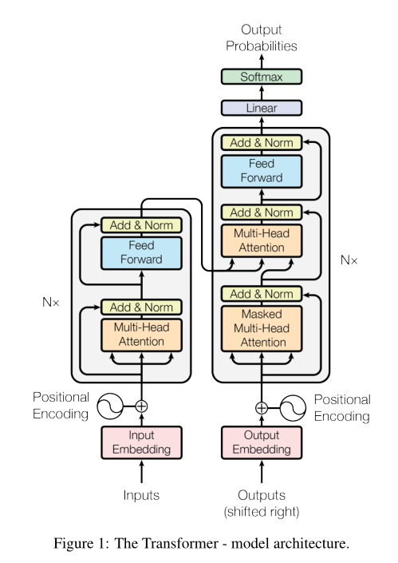
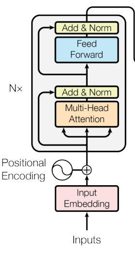
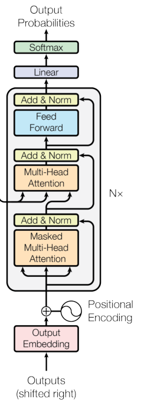
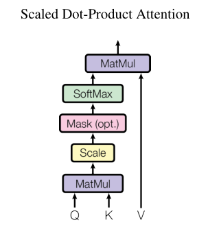

Attention Is All You Need
1 Introduction
- Recurrent neural networks, long short-term memory and gated recurrent neural networks have been state of the art approaches in sequence modeling and transduction problems such as language modeling and machine translation. 在序列模型(语言建模，机器翻译等)中，RNN(循环神经网络)、LSTM(长短期记忆网络,一种时间循环神经网络)、GRNN(Gated-RNN)一直以来是最优方案。
- Recurrent models typically factor computation along the symbol positions of the input and output sequences. This inherently sequential nature precludes parallelization within training examples, which becomes critical at longer sequence lengths, as memory constraints limit batching across examples. 以上模型中，计算隐藏状态$h_t$的函数需要用到$h_{t-1}$(递归),因此无法并行化，严重限制了性能，且难以学习到全局的结构信息。
- Attention mechanisms have become an integral part of compelling sequence modeling and transduction models in various tasks, allowing modeling of dependencies without regard to their distance in the input or output sequences. Attention机制不考虑输入或输出序列中的距离，面向依赖性建模。
- In this work we propose the Transformer, a model architecture eschewing recurrence and instead relying entirely on an attention mechanism to draw global dependencies between input and output. The Transformer allows for significantly more parallelization and can reach a new state of the art in translation quality. Transformer完全依赖于注意力机制来获得输入和输出之间的全局依赖关系，允许并行化。
2 Background
- The number of operations required to relate signals from two arbitrary input or output positions grows in the distance between positions, linearly for ConvS2S and logarithmically for ByteNet. This makes it more difficult to learn dependencies between distant positions. 一些网络如ByteNet, ConvS2S等，使用卷积神经网络作为基本构建块，并行计算所有输入和输出位置的隐藏表示。但距离较远的输入(输出)信号关联起来的计算量随距离的增加而增加，CONVS2为线性，ByteNet为对数。
- In the Transformer this is reduced to a constant number of operations. 而Transformer可以减少到常数级的计算量。
- Self-attention, sometimes called intra-attention is an attention mechanism relating different positions of a single sequence in order to compute a representation of the sequence. 自注意力机制，将单个序列的不同位置联系起来，来计算序列的表示。
3 Model Architecture
- The Transformer follows this overall architecture using stacked self-attention and point-wise, fully connected layers for both the encoder and decoder. Transformer使用多层叠加的自注意力层，在编码器和解码器中使用全连接层。
- 
3.1 Encoder and Decoder stacks

- Encoder
- The encoder is composed of a stack of N= 6identical layers. 6个相同的层。
- The first is a multi-head self-attention mechanism, and the second is a simple, position-wise fully connected feed-forward network. 每层包括两个子层。第一个子层是一个多头注意力层，第二个子层是一个简单的位置相关的全连接前馈网络。
- We employ a residual connection around each of the two sub-layers, followed by layer normalization. 每个子层之后，都加一个残差连接块，并进行归一化。
- That is, the output of each sub-layer is $LayerNorm(x+ Sublayer(x))$, where $Sublayer(x)$ is the function implemented by the sub-layer itself.将上一步的内容用公式表达。
- To facilitate these residual connections, all sub-layers in the model, as well as the embedding layers, produce outputs of dimension $d_{model}$= 512. 所有子层，包括嵌入层的输出维度均为512.

- Decoder
- The decoder is also composed of a stack of N= 6identical layers. 同样是重复六层。
- In addition to the two sub-layers in each encoder layer, the decoder inserts a third sub-layer, which performs multi-head
attention over the output of the encoder stack. Similar to the encoder, we employ residual connections around each of the sub-layers, followed by layer normalization. 与Encoder相比，多了一个多头注意力层，输入为Encoder的输出。同样，每个子层添加残差模块和归一化。 - We also modify the self-attention sub-layer in the decoder stack to prevent positions from attending to subsequent positions. This masking, combined with fact that the output embeddings are offset by one position, ensures that the predictions for position $i$ can depend only on the known outputs at positions less than $i$. 解码器中的自注意力层加入了mask，来确保对位置$i$的信息预测仅依靠位置$i$之前的信息。这其实是一个合理的常识性问题，对于一个信息序列，对某位置信息的预测应该只考虑该位置之前的信息，因为该位置后面的信息可能并没有。
3.2 Attention
3.2.1 Scaled Dot-Product Attention

- The input consists of queries and keys of dimension $d_k$, and values of dimension $d_v$. 输入为三个矩阵$Q,K,V$.
- We compute the dot products of the query with all keys, divide each by $\sqrt{d_k}$, and apply a softmax function to obtain the weights on the values. 每个位置的$Q$矩阵与所有位置的$K$矩阵做点积，除以$\sqrt{d_k}$(为了防止点积过大，$softmax$失去效果，所以需要调节一下)，再接一个$Softmax$层后获得矩阵$V$的权重。
- In practice, we compute the attention function on a set of queries simultaneously, packed together into a matrix $Q$. The keys and values are also packed together into matrices $K$ and $V$. 实际计算中，每个位置的矩阵$Q_i$摞在一起形成矩阵$Q$，$K_i$也摞在一起形成$K$，$V$同理。
- $Attention(Q,K,V)=softmax(\frac{QK^T}{\sqrt{d_k}})V, Q\in R^{n \times d_k}, K\in R^{m \times d_k}, V \in R_{m \times d_v}$. 以上内容的公式形式。**可以理解为将 $n×d_k$ 的序列 $Q$ 编码成了一个新的 $n×d_v $的序列$V$**。
3.2.2 Multi-Head Attention
- Instead of performing a single attention function with $d_{model}$-dimensional keys, values and queries, we found it beneficial to linearly project the queries, keys and values $h$ times with different, learned linear projections to $d_k$,$d_k$ and $d_v$ dimensions, respectively. 将$Q,K,V$各自线性投射分成$h$部分，实现多头注意力。
- On each of these projected versions of queries, keys and values we then perform the attention function in parallel, yielding $d_v$-dimensional output values.投射后，$Q,K,V$的维度会减少，并且分出去的几个部分可以并行计算。
- These are concatenated and once again projected, resulting in the final values. 这种投射其实就是把512维的向量拆开，分别计算(多个注意力机制并行计算)后，再连接在一起。
- $MultiHead(Q, K, V) = Concat(head_1,…,head_n)W^o, head_i=Attention(QW_i^Q, KW_i^K, VW_i^V)$.以上内容的公式形式，其中$W_i^Q,W_i^K,W_i^V,W^O$是需要学习的参数。
- In this work we employ $h= 8$ parallel attention layers, or heads. For each of these we use $d_k=d_v=d_{model}/h= 64$. Due to the reduced dimension of each head, the total computational cost is similar to that of single-head attention with full dimensionality. 将此前的$Q,K,V$按维度平均分成8部分，每一部分作为多头注意力的一头。计算量基本与拆分前相同。
3.2.3 Applications of Attention in our Model
In “encoder-decoder attention” layers, the queries come from the previous decoder layer,and the memory keys and values come from the output of the encoder. This allows every position in the decoder to attend over all positions in the input sequence. 在Decoder中，$Q$矩阵来自Decoder的前一层，$K,V$来自Encoder的输出。
The encoder contains self-attention layers. In a self-attention layer all of the keys, values and queries come from the same place, in this case, the output of the previous layer in the encoder. Each position in the encoder can attend to all positions in the previous layer of the encoder. 在Encoder中，$Q,K,V$矩阵均来自上一层Encoder的输出。
We need to prevent leftward information flow in the decoder to preserve the auto-regressive property. We implement this
inside of scaled dot-product attention by masking out (setting to -∞ ) all values in the input of the $softmax$ which correspond to illegal connections. Decoder应该避免看到未来的信息，只考虑当前的信息，所以对所有未来的信息，通过设置$-\infty$将其过滤掉。有关自回归性，可以参考这篇文章。
3.3 Position-wise Feed-Forward Networks
- In addition to attention sub-layers, each of the layers in our encoder and decoder contains a fully connected feed-forward network, which is applied to each position separately and identically. This consists of two linear transformations with a ReLU activation in between. 每个Encoder和Decoder都包含一个全连接前向反馈网络，包括两个线性变换，中间用ReLU激活。同一层每个位置的信息对应的FFN一样，不同层的FFN不一样。
- $FFN(x)=ReLU(xW_1+b_1)W_2+b_2$. 层与层之间使用不同的参数。
3.4 Embedding and Softmax
- Similarly to other sequence transduction models, we use learned embeddings to convert the input tokens and output tokens to vectors of dimension $d_{model}$. 和其他序列模型类似，Transformer使用学习到的嵌入层将输入和输出信息转换为向量。
- We also use the usual learned linear transformation and $softmax$ function to convert the decoder output to predicted next-token probabilities. FFN需要经过训练，通过$Softmax$输出概率。
- In our model, we share the same weight matrix between the two embedding layers and the pre-softmax linear transformation. 在将源语言和目标语言转换为向量的过程中，原文让他们共享一个词嵌入矩阵。对于欧洲语系，这是可行的，因为它们之间有许多相似之处。对于中英文翻译，则没有必要共享参数。
- In the embedding layers, we multiply those weights by $\sqrt{d_{model}}$. 词嵌入矩阵 * $\sqrt{d_{model}}$.
3.5 Positional Encoding(PE)
- Since our model contains no recurrence and no convolution, in order for the model to make use of the order of the sequence, we must inject some information about the relative or absolute position of the tokens in the sequence. Transformer没有考虑到不同位置下的信息差异，即相同的信息不同的排列，得到的结果是一样的。为了能够考虑位置因素，需要加入位置信息，即Positional Encoding.
- The positional encodings have the same dimension $d_{model}$ as the embeddings, so that the two can be summed. Positional encodings和embeddings的维度一致，故可以直接相加。这样，输入向量就具备了位置信息。
- $PE_{(pos,2i)}=sin(pos/10000^{2i/d_{model}}),PE_{(pos,2i+1)}=cos(pos/10000^{2i/d_{model}})$. $pos$指位置，$i$指维度。
- We chose this function because we hypothesized it would allow the model to easily learn to attend by
relative positions. 以上公式可以认为是经验公式，不是数学推导的结果。
4 Code代码

4.0 packages
# !pip install http://download.pytorch.org/whl/cu80/torch-0.3.0.post4-cp36-cp36m-linux_x86_64.whl
# !pip install numpy matplotlib spacy torchtext seaborn
import numpy as np
import torch
import torch.nn as nn
import torch.nn.functional as F
import math,copy,time
from torch.autograd import Variable
import matplotlib.pyplot as plt
import seaborn
seaborn.set_context(context="talk")
# seaborn只在最后可视化self-attention的时候用到，
# 可以先不管或者注释掉这两行4.1 Embeddings
class Embeddings(nn.Module):
def __init__(self,d_model,vocab):
#d_model=512, vocab=当前语言的词表大小
super(Embeddings,self).__init__()
self.lut=nn.Embedding(vocab,d_model)
# one-hot转词嵌入，这里有一个待训练的矩阵E，大小是vocab*d_model
self.d_model=d_model # 512
def forward(self,x):
# x ~ (batch.size, sequence.length, one-hot),
#one-hot大小=vocab，当前语言的词表大小
return self.lut(x)*math.sqrt(self.d_model)
# 得到的10*512词嵌入矩阵，主动乘以sqrt(512)=22.6，
#这里的输出的tensor大小类似于(batch.size, sequence.length, 512)默认情况下，源语言和目标语言的Embedding不共享参数。
if False:
model.src_embed[0].lut.weight=model.tgt_embeddings[0].lut.weight
model.generator.lut.weight=model.tgt_embed[0].lut.weight4.2 Positional Encoding(PE)
class PositionalEncoding(nn.Module):
"""
Implement the PE function.
"""
def __init__(self, d_model, dropout, max_len=5000):
#d_model=512,dropout=0.1,
#max_len=5000代表事先准备好长度为5000的序列的位置编码，其实没必要，
#一般100或者200足够了。
super(PositionalEncoding, self).__init__()
self.dropout = nn.Dropout(p=dropout)
# Compute the positional encodings once in log space.
pe = torch.zeros(max_len, d_model)
#(5000,512)矩阵，保持每个位置的位置编码，一共5000个位置，
#每个位置用一个512维度向量来表示其位置编码
position = torch.arange(0, max_len).unsqueeze(1)
# (5000) -> (5000,1)
# arrange(start, end, step)
div_term = torch.exp(torch.arange(0, d_model, 2) *
-(math.log(10000.0) / d_model))
# (0,2,…, 4998)一共准备2500个值，供sin, cos调用
pe[:, 0::2] = torch.sin(position * div_term) # 偶数下标的位置
pe[:, 1::2] = torch.cos(position * div_term) # 奇数下标的位置
pe = pe.unsqueeze(0)
# (5000, 512) -> (1, 5000, 512) 为batch.size留出位置
self.register_buffer('pe', pe)
def forward(self, x):
x = x + Variable(self.pe[:, :x.size(1)], requires_grad=False)
# 接受1.Embeddings的词嵌入结果x，
#然后把自己的位置编码pe，封装成torch的Variable(不需要梯度)，加上去。
#例如，假设x是(30,10,512)的一个tensor，
#30是batch.size, 10是该batch的序列长度, 512是每个词的词嵌入向量；
#则该行代码的第二项是(1, min(10, 5000), 512)=(1,10,512)，
#在具体相加的时候，会扩展(1,10,512)为(30,10,512)，
#保证一个batch中的30个序列，都使用（叠加）一样的位置编码。
return self.dropout(x) # 增加一次dropout操作
# 注意，位置编码不会更新，是写死的，所以这个class里面没有可训练的参数。4.1和4.2按如下方式连接起来
nn.Sequential(Embeddings(d_model,src_vocab),PositionalEncoding(d_model,dropout)) 4.3 Multi-Head Attention
def attention(query, key, value, mask=None, dropout=None):
# query, key, value的形状类似于(30, 8, 10, 64), (30, 8, 11, 64),
#(30, 8, 11, 64)，例如30是batch.size，即当前batch中有多少一个序列；
# 8=head.num，注意力头的个数；
# 10=目标序列中词的个数，64是每个词对应的向量表示；
# 11=源语言序列传过来的memory中，当前序列的词的个数，
# 64是每个词对应的向量表示。
# 类似于，这里假定query来自target language sequence；
# key和value都来自source language sequence.
"Compute 'Scaled Dot Product Attention'"
d_k = query.size(-1) # 64=d_k
scores = torch.matmul(query, key.transpose(-2, -1)) /
math.sqrt(d_k) # 先是(30,8,10,64)和(30, 8, 64, 11)相乘，
#（注意是最后两个维度相乘）得到(30,8,10,11)，
#代表10个目标语言序列中每个词和11个源语言序列的分别的“亲密度”。
#然后除以sqrt(d_k)=8，防止过大的亲密度。
#这里的scores的shape是(30, 8, 10, 11)
if mask is not None:
scores = scores.masked_fill(mask == 0, -1e9)
#使用mask，对已经计算好的scores，按照mask矩阵，填-1e9，
#然后在下一步计算softmax的时候，被设置成-1e9的数对应的值~0,被忽视
p_attn = F.softmax(scores, dim = -1)
#对scores的最后一个维度执行softmax，得到的还是一个tensor,
#(30, 8, 10, 11)
if dropout is not None:
p_attn = dropout(p_attn) #执行一次dropout
return torch.matmul(p_attn, value), p_attn
#返回的第一项，是(30,8,10, 11)乘以（最后两个维度相乘）
#value=(30,8,11,64)，得到的tensor是(30,8,10,64)，
#和query的最初的形状一样。另外，返回p_attn，形状为(30,8,10,11).
#注意，这里返回p_attn主要是用来可视化显示多头注意力机制。class MultiHeadedAttention(nn.Module):
def __init__(self, h, d_model, dropout=0.1):
# h=8, d_model=512
"Take in model size and number of heads."
super(MultiHeadedAttention, self).__init__()
assert d_model % h == 0 # We assume d_v always equals d_k 512%8=0
self.d_k = d_model // h # d_k=512//8=64
self.h = h #8
self.linears = clones(nn.Linear(d_model, d_model), 4)
#定义四个Linear networks, 每个的大小是(512, 512)的，
#每个Linear network里面有两类可训练参数，Weights，其大小为512*512
#以及biases，其大小为512=d_model。
self.attn = None
self.dropout = nn.Dropout(p=dropout)
def forward(self, query, key, value, mask=None):
# 注意，输入query的形状类似于(30, 10, 512)，
# key.size() ~ (30, 11, 512),
#以及value.size() ~ (30, 11, 512)
if mask is not None: # Same mask applied to all h heads.
mask = mask.unsqueeze(1) # mask下回细细分解。
nbatches = query.size(0) #e.g., nbatches=30
# 1) Do all the linear projections in batch from
#d_model => h x d_k
query, key, value = [l(x).view(nbatches, -1, self.h, self.d_k)
.transpose(1, 2) for l, x in
zip(self.linears, (query, key, value))]
# 这里是前三个Linear Networks的具体应用，
#例如query=(30,10, 512) -> Linear network -> (30, 10, 512)
#-> view -> (30,10, 8, 64) -> transpose(1,2) -> (30, 8, 10, 64)
#，其他的key和value也是类似地，
#从(30, 11, 512) -> (30, 8, 11, 64)。
# 2) Apply attention on all the projected vectors in batch.
x, self.attn = attention(query, key, value, mask=mask,
dropout=self.dropout)
#调用上面定义好的attention函数，输出的x形状为(30, 8, 10, 64)；
#attn的形状为(30, 8, 10=target.seq.len, 11=src.seq.len)
# 3) "Concat" using a view and apply a final linear.
x = x.transpose(1, 2).contiguous().
view(nbatches, -1, self.h * self.d_k)
# x ~ (30, 8, 10, 64) -> transpose(1,2) ->
#(30, 10, 8, 64) -> contiguous() and view ->
#(30, 10, 8*64) = (30, 10, 512)
return self.linears[-1](x)
#执行第四个Linear network，把(30, 10, 512)经过一次linear network，
#得到(30, 10, 512).4.7 LayerNorm
class LayerNorm(nn.Module):
"Construct a layernorm module (See citation for details)."
def __init__(self, features, eps=1e-6):
# features=d_model=512, eps=epsilon 用于分母的非0化平滑
super(LayerNorm, self).__init__()
self.a_2 = nn.Parameter(torch.ones(features))
# a_2 是一个可训练参数向量，(512)
self.b_2 = nn.Parameter(torch.zeros(features))
# b_2 也是一个可训练参数向量, (512)
self.eps = eps
def forward(self, x):
# x 的形状为(batch.size, sequence.len, 512)
mean = x.mean(-1, keepdim=True)
# 对x的最后一个维度，取平均值，得到tensor (batch.size, seq.len, 1)
std = x.std(-1, keepdim=True)
# 对x的最后一个维度，取标准方差，得(batch.size, seq.len, 1)
return self.a_2 * (x - mean) / (std + self.eps) + self.b_2
# 本质上类似于（x-mean)/std，不过这里加入了两个可训练向量
# a_2 and b_2，以及分母上增加一个极小值epsilon，用来防止std为0
# 的时候的除法溢出4.4 SubLayer Connection
class SublayerConnection(nn.Module):
"""
A residual connection followed by a layer norm.
Note for code simplicity the norm is first as opposed to last.
"""
def __init__(self, size, dropout):
# size=d_model=512; dropout=0.1
super(SublayerConnection, self).__init__()
self.norm = LayerNorm(size) # (512)，用来定义a_2和b_2
self.dropout = nn.Dropout(dropout)
def forward(self, x, sublayer):
"Apply residual connection to any sublayer with the "
"same size."
# x is alike (batch.size, sequence.len, 512)
# sublayer是一个具体的MultiHeadAttention
#或者PositionwiseFeedForward对象
return x + self.dropout(sublayer(self.norm(x)))
# return x + self.dropout(self.norm(sublayer(x)))
# x (30, 10, 512) -> norm (LayerNorm) -> (30, 10, 512)
# -> sublayer (MultiHeadAttention or PositionwiseFeedForward)
# -> (30, 10, 512) -> dropout -> (30, 10, 512)
# 然后输入的x（没有走sublayer) + 上面的结果，
#即实现了残差相加的功能4.5 Position-wise Feed Forward Network
class PositionwiseFeedForward(nn.Module):
"Implements FFN equation."
def __init__(self, d_model, d_ff, dropout=0.1):
# d_model = 512
# d_ff = 2048 = 512*4
super(PositionwiseFeedForward, self).__init__()
self.w_1 = nn.Linear(d_model, d_ff)
# 构建第一个全连接层，(512, 2048)，其中有两种可训练参数：
# weights矩阵，(512, 2048)，以及
# biases偏移向量, (2048)
self.w_2 = nn.Linear(d_ff, d_model)
# 构建第二个全连接层, (2048, 512)，两种可训练参数：
# weights矩阵，(2048, 512)，以及
# biases偏移向量, (512)
self.dropout = nn.Dropout(dropout)
def forward(self, x):
# x shape = (batch.size, sequence.len, 512)
# 例如, (30, 10, 512)
return self.w_2(self.dropout(F.relu(self.w_1(x))))
# x (30, 10, 512) -> self.w_1 -> (30, 10, 2048)
# -> relu -> (30, 10, 2048)
# -> dropout -> (30, 10, 2048)
# -> self.w_2 -> (30, 10, 512)是输出的shape"""
下面这个clones方法，实现一个网络的深copy，也就是说一个新的对象，和原来的对象，完全分离，不分享任何存储空间：（从而保证可训练参数，都有自己的取值，梯度）
"""
def clones(module, N):
"Produce N identical layers."
return nn.ModuleList([copy.deepcopy(module) for _ in range(N)])4.6 EncoderLayer
class EncoderLayer(nn.Module):
"Encoder is made up of self-attn and "
"feed forward (defined below)"
def __init__(self, size, self_attn, feed_forward, dropout):
# size=d_model=512
# self_attn = MultiHeadAttention对象, first sublayer
# feed_forward = PositionwiseFeedForward对象，second sublayer
# dropout = 0.1 (e.g.)
super(EncoderLayer, self).__init__()
self.self_attn = self_attn
self.feed_forward = feed_forward
self.sublayer = clones(SublayerConnection(size, dropout), 2)
# 使用深度克隆方法，完整地复制出来两个SublayerConnection
self.size = size # 512
def forward(self, x, mask):
"Follow Figure 1 (left) for connections."
# x shape = (30, 10, 512)
# mask 是(batch.size, 10,10)的矩阵，类似于当前一个词w，有哪些词是w可见的
# 源语言的序列的话，所有其他词都可见，除了"<blank>"这样的填充；
# 目标语言的序列的话，所有w的左边的词，都可见。
# 匿名函数
x = self.sublayer[0](x, lambda x: self.self_attn(x, x, x, mask))
# x (30, 10, 512) -> self_attn (MultiHeadAttention)
# shape is same (30, 10, 512) -> SublayerConnection
# -> (30, 10, 512)
return self.sublayer[1](x, self.feed_forward)
# x 和feed_forward对象一起，给第二个SublayerConnection4.8 Encoder
class Encoder(nn.Module):
"Core encoder is a stack of N layers"
def __init__(self, layer, N):
# layer = one EncoderLayer object, N=6
super(Encoder, self).__init__()
self.layers = clones(layer, N)
# 深copy，N=6，
self.norm = LayerNorm(layer.size)
# 定义一个LayerNorm，layer.size=d_model=512
# 其中有两个可训练参数a_2和b_2
def forward(self, x, mask):
"Pass the input (and mask) through each layer in turn."
# x is alike (30, 10, 512)
# (batch.size, sequence.len, d_model)
# mask是类似于(batch.size, 10, 10)的矩阵
for layer in self.layers:
x = layer(x, mask)
# 进行六次EncoderLayer操作
return self.norm(x)
# 最后做一次LayerNorm，最后的输出也是(30, 10, 512) shape4.9 DecoderLayer
class DecoderLayer(nn.Module):
"Decoder is made of self-attn, src-attn, "
"and feed forward (defined below)"
def __init__(self, size, self_attn, src_attn,
feed_forward, dropout):
# size = d_model=512,
# self_attn = one MultiHeadAttention object，目标语言序列的
# src_attn = second MultiHeadAttention object, 目标语言序列
# 和源语言序列之间的
# feed_forward 一个全连接层
# dropout = 0.1
super(DecoderLayer, self).__init__()
self.size = size # 512
self.self_attn = self_attn
self.src_attn = src_attn
self.feed_forward = feed_forward
self.sublayer = clones(SublayerConnection(size, dropout), 3)
# 需要三个SublayerConnection, 分别在
# self.self_attn, self.src_attn, 和self.feed_forward
# 的后边
def forward(self, x, memory, src_mask, tgt_mask):
"Follow Figure 1 (right) for connections."
m = memory # (batch.size, sequence.len, 512)
# 来自源语言序列的Encoder之后的输出，作为memory
# 供目标语言的序列检索匹配：（类似于alignment in SMT)
x = self.sublayer[0](x,
lambda x: self.self_attn(x, x, x, tgt_mask))
# 通过一个匿名函数，来实现目标序列的自注意力编码
# 结果扔给sublayer[0]:SublayerConnection
x = self.sublayer[1](x,
lambda x: self.src_attn(x, m, m, src_mask))
# 通过第二个匿名函数，来实现目标序列和源序列的注意力计算
# 结果扔给sublayer[1]:SublayerConnection
return self.sublayer[2](x, self.feed_forward)
# 走一个全连接层，然后
# 结果扔给sublayer[2]:SublayerConnection4.10 Decoder

class Decoder(nn.Module):
"Generic N layer decoder with masking."
def __init__(self, layer, N):
# layer = DecoderLayer object
# N = 6
super(Decoder, self).__init__()
self.layers = clones(layer, N)
# 深度copy六次DecoderLayer
self.norm = LayerNorm(layer.size)
# 初始化一个LayerNorm
def forward(self, x, memory, src_mask, tgt_mask):
for layer in self.layers:
x = layer(x, memory, src_mask, tgt_mask)
# 执行六次DecoderLayer
return self.norm(x)
# 执行一次LayerNorm4.11 Generator

class Generator(nn.Module):
"Define standard linear + softmax generation step."
def __init__(self, d_model, vocab):
# d_model=512
# vocab = 目标语言词表大小
super(Generator, self).__init__()
self.proj = nn.Linear(d_model, vocab)
# 定义一个全连接层，可训练参数个数是(512 * trg_vocab_size) +
# trg_vocab_size
def forward(self, x):
return F.log_softmax(self.proj(x), dim=-1)
# x 类似于 (batch.size, sequence.length, 512)
# -> proj 全连接层 (30, 10, trg_vocab_size) = logits
# 对最后一个维度执行log_soft_max
# 得到(30, 10, trg_vocab_size)4.12 EncoderDecoder
class EncoderDecoder(nn.Module):
"""
A standard Encoder-Decoder architecture.
Base for this and many other models.
"""
def __init__(self, encoder, decoder,
src_embed, tgt_embed, generator):
super(EncoderDecoder, self).__init__()
self.encoder = encoder
# Encoder对象
self.decoder = decoder
# Decoder对象
self.src_embed = src_embed
# 源语言序列的编码，包括词嵌入和位置编码
self.tgt_embed = tgt_embed
# 目标语言序列的编码，包括词嵌入和位置编码
self.generator = generator
# 生成器
def forward(self, src, tgt, src_mask, tgt_mask):
"Take in and process masked src and target sequences."
return self.decode(self.encode(src, src_mask), src_mask,
tgt, tgt_mask)
# 先对源语言序列进行编码，
# 结果作为memory传递给目标语言的编码器
def encode(self, src, src_mask):
# src = (batch.size, seq.length)
# src_mask 负责对src加掩码
return self.encoder(self.src_embed(src), src_mask)
# 对源语言序列进行编码，得到的结果为
# (batch.size, seq.length, 512)的tensor
def decode(self, memory, src_mask, tgt, tgt_mask):
return self.decoder(self.tgt_embed(tgt),
memory, src_mask, tgt_mask)
# 对目标语言序列进行编码，得到的结果为
# (batch.size, seq.length, 512)的tensor4.13 model
def make_model(src_vocab, tgt_vocab, N=6,
d_model=512, d_ff=2048, h=8, dropout=0.1):
"Helper: Construct a model from hyperparameters."
# src_vocab = 源语言词表大小
# tgt_vocab = 目标语言词表大小
c = copy.deepcopy # 对象的深度copy/clone
attn = MultiHeadedAttention(h, d_model) # 8, 512
# 构造一个MultiHeadAttention对象
ff = PositionwiseFeedForward(d_model, d_ff, dropout)
# 512, 2048, 0.1
# 构造一个feed forward对象
position = PositionalEncoding(d_model, dropout)
# 位置编码
model = EncoderDecoder(
Encoder(EncoderLayer(d_model, c(attn), c(ff), dropout), N),
Decoder(DecoderLayer(d_model, c(attn), c(attn),
c(ff), dropout), N),
nn.Sequential(Embeddings(d_model, src_vocab), c(position)),
nn.Sequential(Embeddings(d_model, tgt_vocab), c(position)),
Generator(d_model, tgt_vocab))
# This was important from their code.
# Initialize parameters with Glorot / fan_avg.
for p in model.parameters():
if p.dim() > 1:
nn.init.xavier_uniform(p)
return model # EncoderDecoder 对象